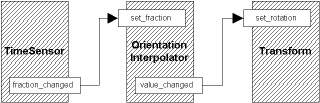

| Inbetweener |
Interpoladores y Animación
Muy bien, ahora vamos a aprender algo sobre los nodos interpoladores. Son muy inportantes para las animaciones, y en cambio son muy sencillos. El concepto general es que se usan para cambiar determinados valores según pasa el tiempo. Dependiendo del valor que desees cambiar, usarás uno de los seis tipos distintos de interpoladores que existen. Dado que son muy similares, los cubriremos de pasada, y tendremos un gran ejemplo al final.
Usarás interpoladores cuando quieras cambiar el valor de un campo cada determinado tiempo. Un interpolador toma la señal de un TimeSensor, y realiza una interpolación linear entre un juego de valores llamado keyValues. Para cada keyValue hay una key (clave) que es una fracción de 0 a 1. Ahora, como recordarás, un TimeSensor envía eventos fraction_changed tan regularmente como puede. Esto puede dirigirse al eventIn set_fraction de un interpolador para llevarlo al punto correcto del ciclo de la interpolación. Así, si diriges un TimeSensor con un cycleInterval de 10 a un interpolador, este pasará por cada clave cada 10 segundos.
Cada vez que un interpolator recibe un eventIn, genera un eventOut con
el valor interpolado apropiado. Esto puede dirigirse a algun campo del
tipo apropiado para cambiar su valor. Así, la cadena de la animación
global para un interpolator se parece el diagrama debajo. Este diagrama
usa un OrientationInterpolator y un nodo Transform para demostrar
el esquema del ROUTE.

Tipos de Interpoladores
Vale, echemos un vistazo a los nodos mismos. Puedes usarlos en cualquier sitio, al principio del archivo, dentro de un nodo Transform, donde sea. Como están completamente involucrados en el mecanismo de la animación, pueden entrar en cualquier parte de la jerarquía de la escena, no importa dónde.
Todos los nodos tienen los mismos campos, pero con tipos diferentes para el keyValue y el eventOut value_changed. Así que primero tendremos un eventIn set_fraction que recibe los eventos de un TimeSensors o de otra parte. Este lleva a la fase actual del ciclo de la animación, y determina hasta qué punto de la interpolación hemos llegado. El próximo campo es key. Es una sucesión de números de 0 a 1 correspondiendo a los puntos clave en la animación. Así, si en fracción 0 quieres un cierto valor de posición, y quieres ir cambiándolo para las fracciones 0.5 y 1.0, debes tener un campo key de [0, 0.5, 1], en el que cada número representa un fragmento de cada keyframe. Cada key (o clave) tiene una entrada correspondiente en el campo keyValue, por lo que, si seguimos el ejemplo anterior (usando un ScalarInterpolator que interpola valores SFFloat), podríamos tener un campo keyValue de [0.0, 10.0, 0.0]. En fragmento 0, el valor enviado sería 0.0, en 0.5 sería 10.0, y en 1 estaría de nuevo a 0.0. Entre estas keys el valor se interpola linealmente, por lo que en la fracción 0.25, el valor estará en 5.0. Este valor es la salida de datos a lo largo del eventOut siempre que se reciba un evento set_fraction.
Los interpoladores permiten especificar los "fotogramas" clave en una animación y el navegador gestiona todos los pasos intermedios para generar la animación. Esto permite una definición concisa y simple de la animación. Una cosa importante que debes recordar es que si quieres una animación cíclica, deberás tener el mismo valor en la fracción 1 que en la 0. Si no, la animación saltará bruscamente de la última clave a la primera. Ahora, echemos un vistazo a los tipos de valores que podemos interpolar con cada nodo.
ColorInterpolator {
eventIn SFFloat set_fraction
exposedField MFFloat key []
exposedField MFFloat keyValue []
eventOut SFFloat value_changed
}El primero es ColorInterpolator. Como es evidente, interpola valores triples de color RGB. Los colores se declaran en el campo keyValue de la misma manera en que especificarías cualquier campo MFColor. Si quisieras un color que pasara de verda a rojo, pasando por azul, deberías usar algo como lo siguiente (piensa en que esta animación, de ser cíclica, tendría un salto brusco del final al principio):
key [0, 0.5, 1] keyValue [0 0 1, 0 1 0, 1 0 0]
Esto es lo que hay. En el fondo, el resto de los nodos interpoladores son el mismo nodo continuamente, pero con diferentes valores para el campo keyValue. De todos modos, vamos a detenernos en ellos.
CoordinateInterpolator {
eventIn SFFloat set_fraction
exposedField MFFloat key []
exposedField MFVec3f keyValue []
eventOut MFVec3f value_changed
}Bueno, aunque antes he dicho que todos eran iguales, hay que decir que este es un poco diferente. Este, en lugar de enviar un solo valor, envía muchos al mismo tiempo. Esto es para que puedas interpolar muchas coordenadas (un IndexedFaceSet entero) de una sola pasada. Para hacer esto, el número de coordenadas del campo keyValue tiene que ser un múltiplo exacto del número de keys. Este número de coordenadas será lanzado al mismo tiempo. Piensa que debes guardar el orden de las coordenadas cada vez, o tu objeto resutará francamente extraño.
NormalInterpolator {
eventIn SFFloat set_fraction
exposedField MFFloat key []
exposedField MFVec3f keyValue []
eventOut MFVec3f value_changed
}Como antes, este nodo envía muchos normales al tiempo, por distintos motivos. La salida de datos del nodo deben ser varios valores de normales, para poder manejar todos los normales de un solo objeto a la vez.
OrientationInterpolator {
eventIn SFFloat set_fraction
exposedField MFFloat key []
exposedField MFRotation keyValue []
eventOut SFRotation value_changed
}Esto interpola valores de rotación, y es conveniente dirigirlo al set_rotation de un nodo Transform.
PositionInterpolator {
eventIn SFFloat set_fraction
exposedField MFFloat key []
exposedField MFVec3f keyValue []
eventOut SFVec3f value_changed
}De nuevo, esto interpola valores de posiciones tridimensionales, y puede dirigirse al set_translation de un Transform. Sin embargo, puedes dirigirlo hacia cualquier eventIn que acepte valores SFVec3f.
ScalarInterpolator {
eventIn SFFloat set_fraction
exposedField MFFloat key []
exposedField MFFloat keyValue []
eventOut SFFloat value_changed
}
Este nodo interpola valores de coma flotante. Con esto, podrías interpolar la intensidad de una luz, la transparencia de un objeto, o cualquier otro valor similar. También puedes "invertir" un TimeSensor, interpolando entre 1 en la fracción=0 y 0 en la fracción=1.
Disco Duncan
Bueno, sólo he hecho un ejemplo para este capítulo, pero contiene todos los tipos de interpoladores. Todos están dirigidos por el mismo TimeSensor, de modo que llevan el mismo ritmo. Los ejemplos se colocan alrededor del punto de entrada, para que puedas moverte entre ellos y verlos por separado. Sólo una nota rápida, el ScalarInterpolator está cambiando la intensidad de la iluminación en el cilindro. El resto es bastante autoexplicativo. Deberías mirar cuidadosamente el código, dado que puede resultar un poco complejo.
Bien, con esto acabamos las funciones básicas para la animación en VRML97. Ahora, uniendolo con el material que ya hemos cubierto, estás en disposición de hacer cosas impresionantes. Sin embargo, todavía queda material por cubrir. El próximo capítulo, cubriremos los nodos bindable. ¡Será divertido!